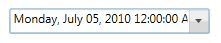

The steps to create DateTimeEdit control by using Visual Studio in C# as follows:
1. Open Visual Studio, On the File menu click New -> Project. This opens the New Project Dialog box.

Figure 416: New Project Dialog box
2. Select WPF Application in the ProjectDialog window and type the name of the project in the name field.Click OK.

Figure 417: New Project
3. Add the following Reference with the sample project.
· Syncfusion.Shared.Silverlight.dll

Figure 418: Solution Explorer
4. Click and open C# file. Add DateTimeEdit control to your application.
Here is the code to create DateTimeEdit control in C#.
|
C# |
|
DateTimeEdit dateTimeEdit = new DateTimeEdit(); dateTimeEdit.Width = 200; dateTimeEdit.Height = 25; |

Figure 419: DateTimeEdit control
See Also
Creating a DateTimeEdit control in XAML
Creating a DateTimeEdit control by using Blend